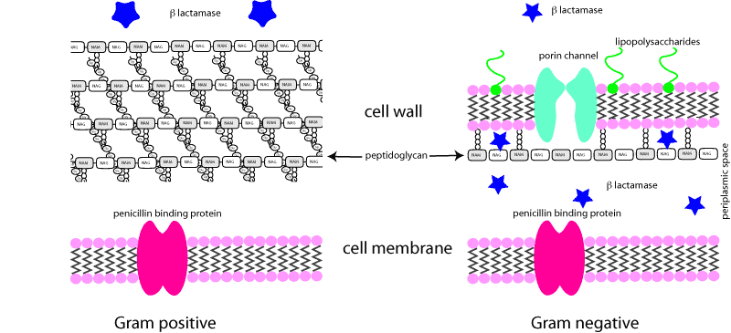

Penicillins were the first antibiotics in clinical use (1942) and are still going strong. Benzylpenicillin (penicillin G) and its orally active analogue phenoxymethyl penicillin (penicillin V) are still used, although a wide range of semi synthetic penicillins are also on the market, eg, ampicillin, amoxycillin, cloxacillin, etc, etc.
The synthesis of bacterial cell walls.
Inhibition of bacterial cell wall synthesis. The final step in peptidoglycan synthesis in the bacterial cell wall is the transpeptidation step (see diagram). This reaction is catalysed by bacterial cell wall enzymes which differ from bacteria to bacteria and are collectively called the penicillin binding proteins. Penicillins bind covalently to these.
Failure to complete the synthesis of peptidoglycan results in weak points and holes in the cell wall of the replicating bacteria. Osmotic pressure forces the cell membrane through the holes and it ruptures.
Naturally occurring penicillins (e.g. benzylpenicillin) are primarily active against Gram positive bacteria. Gram negatives are protected by their outer cell membrane.
Different structures of G+ and G- bacterial cell walls. β-lactamases are trapped in the periplasmic space in G- bacteria where they reach a higher concentration than the equivalent enzymes secreted by G+ bacteria.
Semi synthetic penicillins fall into several groups. Some are acid resistant and are therefore active when given orally, e.g. phenoxymethyl penicillin (penicillin V) and many of the broader spectrum semi-synthetic drugs. Some penicillins also kill Gram negative bacteria, e.g. ampicillin, hetacillin (an ampicillin pro-drug), amoxycillin, cyclacillin, pivampicillin, carbenicillin, ticarcillin, piperacillin, mezlocillin, azlocillin. Some are ß-lactamase (penicillinase) resistant, and therefore have more activity against ß-lactamase producing bacteria, e.g. oxacillin, cloxacillin, dicloxacillin, flucloxacillin, methicillin, nafcillin. Some are useful against Pseudomonas spp, eg, ticarcillin and pipercillin.
The structure of penicillins. Many bacteria are resistant because they produce β lactamase. The six sided ring on cephalosporins protects the β lactam ring to a large extent. Clavulanic acid binds to and inactivates the β lactamase.
Many bacteria produce ß-lactamase, which breaks open the ß-lactam ring and inactivates the penicillin. Gram positive organisms (especially Staph aureus) secrete their ß-lactamase into the intercellular fluid, where it can diffuse away. The gene for ß-lactamase is usually on a plasmid. Most Gram negative bacteria are inherently resistant because of low permeability, lack of penicillin binding protein, and a wide variety of chromosomally derived ß-lactamases in the periplasmic space. Plasmid derived ß-lactamases are also common in Gram negative bacteria. Different ß-lactamases (and there are lots of them) are effective against different ß-lactam drugs.
One way around this problem is to use drugs with broad spectrum ß-lactamase inhibiting effects (but no antibiotic effects) such as clavulanic acid, sulbactam and tazobactam in combination with penicillins. Because of the location of the ß-lactamases, the antagonism of Gram negative ß-lactamase is not as reliable as it is for Gram positive ß-lactamase producing bacteria.
Another way around the problem is to make the antibiotic resistant to ß-lactamases. This resistance is not absolute. The ß-lactamase resistant penicillins tend to remain susceptible to ß-lactamases of some Gram negative bacteria, and most Bacteroides spp. Extended spectrum ß-lactamases producing bacteria have been isolated in people in NZ - these destroy most ß-lactam drugs but are thankfully rare - at the moment.
More on ß-lactamases
Streps sometimes develop resistance to penicillins by changing their penicillin binding proteins. This has been shown with Strep pneumoniae in man, and may be the cause of increased resistance in Strep uberis in cows.
MRSA have a gene, mec-A, which codes for a different penicillin binding protein, PBP2A. This can take over if the normal PBP is knocked out by ß-lactams, so MRSA are resistant to most ß-lactams.
Allergic reactions are the most common form of toxicity, particularly in horses (and people). Guinea pigs and hamsters are also sensitive to penicillins either through allergies or alterations to intestinal flora: do not use penicillins in these species.
When given intrathecally to patients with meningitis, penicillins have caused convulsions, possibly due to the procaine salts used. Procaine is also incriminated as the cause of CNS excitation and collapse in horses given procaine penicillin. This may be the result of inadvertent intravenous administration of these intramuscular preparations, but is more likely an immune mediated problem. Some brands or batches have high concentrations of free procaine, which may be absorbed rapidly from intramuscular sites.
Most penicillins are weak organic acids with a pKa of about 2.7. Therefore they are ionised at blood pH and are confined to the extracellular fluid. They do not cross lipid membranes well and therefore penetrate some body compartments poorly, eg eye, cerebrospinal fluid, prostate. However, in inflammation the lipid barriers are often disrupted and penicillins can be clinically useful. Esters such as penethamate, which act as produgs, are used because they cross membranes much more easily.
Penicillins are hydrolysed by strong acids and deactivated in the stomach. Some semi-synthetic penicillins have bulky side chains which sterically protect against this effect and are therefore useful when given enterally eg phenoxymethyl penicillin, ampicillin and amoxycillin.
Most penicillins are substrates for the organic anion transporters of the renal proximal tubule epithelial cells and of the choroid brush border membrane. This means that they are actively secreted into the urine and actively removed from the cerebrospinal fluid. Secretion is the most important mechanism for elimination from the body for many of the penicillins. Some semi synthetic penicillins are metabolised, and others (eg amoxycillin) are also concentrated in the bile sufficiently to achieve therapeutic concentration in the bile ducts and small intestine.
Other weak acids, such as aspirin and probenecid, compete for the organic anion transporters, and therefore co-administration with penicillins results in a decrease in the clearance, or an increase in the half-life of the penicillins. This has been exploited clinically in people but is not well characterised for domestic animals.
The duration of action of intramuscular preparations of benzylpenicillin can be altered by using salts of varying solubility:
The more slowly absorbed salts result in lower peak plasma levels, and if inadequately dosed will result in subtherapeutic plasma or tissue concentrations. There is now evidence that benethamine and benzathine salts of penicillin when used alone never result in plasma concentrations of penicillin which are likely to be effective.
Sodium and potassium salts of penicillin can be given intravenously, but care should be taken not to give a toxic dose of potassium. Rapid boluses will transiently depress cardiac output, presumably because of the low pH.
Penicillins will precipitate when mixed in vitro (i.e. in a bottle or syringe) with basic drugs, such as aminoglycosides. This can cause confusion because in vivo penicillins and aminoglycosides can be synergistic under some conditions. They should be administered separately unless they come as a mixture.
Benzylpenicillin (penicillin G) is effective against most Gram positive bacteria except those producing ß-lactamase (mainly Staphs). Parenteral only: sodium and potassium salts are usually given iv, others im or sc. Frequently misused as a prophylactic antibiotic in surgery. Frequently used in combination with aminoglycosides in septicaemia, and other severe infections. Quite potent against anaerobes in addition to susceptible Gram positive bacteria. Cheap. 1 international unit (IU) = 0.6 µg Na benzylpenicillin. Phenoxymethyl penicillin is very similar but can be given orally.
Cloxacillin is active against Gram positive bacteria only, including many ß-lactamase producers. Frequently used as an intramammary preparation for treatment and prevention of Staph. aureus mastitis in dairy cattle. Also formulated as a ointment for ophthalmic use. Flucloxacillin is very similar (but has better bioavailability after oral administration) and is used in people for Staph infections.
Ampicillin is broad spectrum and widely used orally or parenterally. Trihydrate salts for im or sc injection tend to clog needles finer than 20SWG, and tend to sting. Low toxicity. Absorption after oral administration is markedly impeded by food.
Amoxycillin (amoxicillin INN) is very similar to ampicillin. Broad spectrum. Superior in that food tends not to effect its oral absorption as much. Trihydrate salt does not clog syringes but does sting (a little) when administered sc (and presumably im).
Co-amoxyclav (amoxycillin and clavulanic acid) (Clavulox, Clavamox, Augmentin, Synulox, etc) is a combination frequently over-used in small animal medicine. It is broad spectrum and ß-lactamase resistant. Should be reserved for cases with known ß-lactamase producing bacterial infections, or for empirical therapy where these bacteria are very likely, eg skin.
Carbenicillin (obsolescent and not available in NZ), ticarcillin (± clavulanic acid) and piperacillin (± tazobactam) should be reserved for treating Pseudomonas and Proteus infections. They are parenteral only and have a very rapid clearance (short half life). Since Pseudomonas infections are usually iatrogenic, there should be no reason to use these in normal practice.
Benzylpenicillin is the drug of choice for most Gram positive infections and is widely used in all species. Where there is likely to be a mixed infection, ampicillin or amoxycillin (± clavulanic acid) are often used. Cloxacillin is very widely used to treat or prevent Staph aureus mastitis in cows, since the Staphs often produce ß-lactamase.
Co-amoxyclav is the most widely used broad spectrum antibiotic by a long way, but all the penicillins are extensively used. Resistant Strep pneumoniae can be a problem, as can allergic reactions to penicillins as a group (macrolides are usually used instead).
Penicillins are of low concern, and are probably the best drugs to use for empirical treatment in animals.